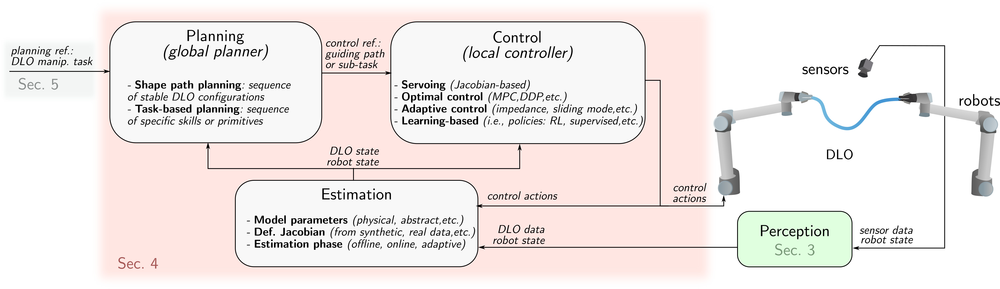

4 Estimation, Control and Planning for DLO Manipulation

This section covers three core components of DLO manipulation: Estimation (Sec. 4.1), Control (Sec. 4.2), and Planning (Sec. 4.3). An overview of their roles and interconnections is illustrated in Fig. 8.
4.1 DLO State and Model Estimation Techniques
In DLO manipulation, estimation refers to the process of identifying physical or kinematic models, such as deformation Jacobians or material parameters, that capture the behavior of deformable objects. Reliable estimation improves the fidelity of DLO models for planning and control, and is critical for narrowing the gap between simulation and reality.
Discrepancies between simulated and real-world DLO behavior often result from idealized assumptions in physical modeling, such as neglecting dynamic effects, contact interactions, or non-homogeneous material properties. These omissions lead to inaccurate predictions even when using high-resolution or computationally expensive models.
To improve alignment with real-world behavior, two estimation approaches are commonly used. The first involves identifying unknown physical parameters—such as stiffness, damping, or friction—to calibrate analytical models (Sec. 2). The second constructs local approximations of DLO behavior directly from data, for instance by estimating deformation Jacobians that map manipulator motions to object deformations.
Estimation strategies can be implemented offline, based on data obtained before the manipulation process; online, by continuously updating model estimates during task execution; or through adaptive schemes that selectively refine offline estimates based on observed discrepancies.
4.1.1 Model Parameters.
The models, described in Sec. 2, utilize several parameters to characterize the behavior of DLOs. These parameters may have a direct physical interpretation, such as length, mass, or bending stiffness, or they may serve primarily to adjust the model’s response under varying conditions, even if they are not directly measurable or lack an intuitive physical interpretation.
Certain parameters, such as length or mass, can be measured non-invasively and with relative ease. In contrast, material properties like Young’s modulus or damping coefficients require specialized and more invasive tests that are often impractical in robotic setups. Even with accurate identification, model approximations and measurement noise limit the prediction and simulation-to-reality fidelity of DLO behavior (Hermansson et al., 2016).
To improve model accuracy, a common strategy is to optimize model parameters to minimize the discrepancy between simulated deformations and reference shapes observed in the real world. Various optimization techniques have been explored for this purpose. Heuristic and gradient-free methods are commonly used, such as heuristic search (Lv et al., 2022; Tong et al., 2024), the cross-entropy method (Yan et al., 2020), evolution strategies (Lim et al., 2022; Yang et al., 2022; Zhang et al., 2024), particle swarm optimization (Yu et al., 2025), and Bayesian optimization (Zhang et al., 2024). In contrast, gradient-based approaches are used in works that exploit differentiable models or simulation environments (Liu et al., 2023; Caporali et al., 2024).
Beyond parameter tuning, recent studies also emphasize the importance of action and trajectory design in the estimation process. For instance, (Yu et al., 2025) proposed a specific trajectory in which the DLO shape is affected by twisting and gravity effects, enabling more accurate identification. Similarly, (Zhang et al., 2024) introduces action sequences aimed at maximizing the object's displacement.
4.1.2 Deformation Jacobian Estimation.
As an alternative to the precomputed models of Sec. 2, a widely adopted strategy is to estimate a local deformation model, often referred to as the deformation Jacobian. This model captures the relationship between local changes in actuation and changes in the DLOs state.
The deformation Jacobian can be derived either from simulation data, or through real-world interactions (Artinian et al., 2024; Navarro-Alarcon et al., 2013). In some cases, analytical expressions of the deformation Jacobian are available for specific formulations, such as the ARAP model (Shetab-Bushehri et al., 2023). While some methods estimate the deformation Jacobian purely from data, others assume a predefined structure on the matrix and estimate parameters within that structure. For example, Berenson, 2013; Wang et al., 2015 assume that the robot’s influence on the object decays exponentially with the distance between the end-effector and the manipulated point, and focus on estimating the decay rate.
In contrast to precomputed models, deformation Jacobians are typically valid only within a narrow range of configurations. As such, they are most effective for local, small-scale deformation tasks and are not suited for long-horizon predictions or transfer to different tasks (Yu et al., 2022). Despite this limitation, deformation Jacobian models are attractive due to their ability to capture object-specific behavior without requiring accurate physical modeling.
4.1.3 Modes of Estimation: Offline, Online, and Adaptive.
In many works, model parameter estimation is computationally intensive and typically performed offline, either before task execution (Lv et al., 2022; Zhang et al., 2024) or during the generation of training datasets for learning-based methods (Yang et al., 2022; Yan et al., 2020). An alternative is the method proposed in (Caporali et al., 2024), which performs online parameter estimation in parallel with task execution.
Similarly, deformation Jacobians can be estimated either offline or online. Online estimation strategies include incremental updates using the Broyden update rule (Navarro-Alarcon et al., 2013) or adaptive updates schemes such as those in (Qi et al., 2021).
Beyond traditional estimation, several learning-based approaches address the sim-to-real gap through online adaptation. For instance, in (Yu et al., 2022; Yu et al., 2025), a globally learned deformation Jacobian serves as a coarse approximation, which is then refined online via gradient-based updates using a sliding window of recent observations. Similarly, (Wang et al., 2022) introduces a hybrid approach where an offline model is augmented with a local linear residual correction, computed online to enhance prediction accuracy. When source (e.g., simulation) and target (e.g., real-world) environments differ in specific regions, (Mitrano et al., 2023) introduces a method that dynamically reweights dataset samples based on a learned similarity metric, enabling ``targeted'' model adaptation.
Assessing the reliability of a model and determining whether adaptation is required is another critical aspect of minimizing the sim-to-real gap. To this end, (Mitrano et al., 2021) proposes a learned classifier that predicts the reliability of a trained dynamics model. However, reliability assessment, fault detection, and recovery remain underexplored, as discussed in Sec. 6.2.
4.2 Control Methods for DLO Manipulation
In the context of DLO manipulation, control refers to the use of feedback information to regulate the object’s state during interaction. Control is critical for DLOs due to the difficulty of accurately modeling their highly nonlinear and typically underactuated behavior. It also becomes highly relevant to compensate for uncertainty and external disturbances during manipulation.
The aspects typically subject to control include the DLO’s shape, the position of relevant feature points, or the regulation of contact forces. This section provides an overview of the most commonly employed control strategies in DLO manipulation. These control strategies will be framed within the task-oriented classification of methods in Sec. 5.
4.2.1 Servoing.
This control paradigm uses the deformation Jacobian matrix (or interaction matrix, using servoing terminology) to relate control inputs directly to changes in the DLO state: \[ \dot{\mathbf{s}} = J(\mathbf{s}, \mathbf{u}) \approx \hat{\mathbf{J}} \mathbf{u},
\] where \(\mathbf{s} \in \mathbb{R}^N\) is the DLO state, \(\mathbf{u} \in \mathbb{R}^M\) is the control input, and \(J: \mathbb{R}^N \times \mathbb{R}^M \to \mathbb{R}^N\) is the deformation Jacobian, locally approximated by the matrix \(\hat{\mathbf{J}} \in \mathbb{R}^{N \times M}\) through estimation methods (Sec. 4.1.2).
In the Jacobian-based control context, the DLO state \(\mathbf{s}\) may include geometric features such as keypoint positions (Artinian et al., 2024), visual representations such as image points (Navarro-Alarcon et al., 2013; Aghajanzadeh et al., 2022), curves (Qi et al., 2023) and splines (Lagneau et al., 2020), or contours (Cuiral-Zueco et al., 2023; Jihong Zhu et al., 2021), among other representations.
A conventional feedback control law is given by \[ \mathbf{u} = \alpha \hat{\mathbf{J}}^+ \mathbf{e} = \alpha \hat{\mathbf{J}}^+ (\mathbf{s}_\mathrm{d} - \mathbf{s}),
\] where \(\mathbf{s}_\mathrm{d} \in \mathbb{R}^N\) is the desired state, \(\mathbf{e} = \mathbf{s}_\mathrm{d} - \mathbf{s}\) is the state error, \(\alpha > 0\) is a control gain, and \(\hat{\mathbf{J}}^+\) denotes the Moore-Penrose pseudoinverse (or the true inverse if \(N = M\), in either case \(\hat{\mathbf{J}}\) needs to be full rank). Additional terms can be incorporated into (2), e.g. collision avoidance as in (Berenson, 2013).
Since DLOs are typically underactuated (\(N \gg M\)), \(\hat{\mathbf{J}}\) is a tall matrix. As a result, the pseudoinverse \(\hat{\mathbf{J}}^+\) presents a non-trivial nullspace, meaning that controllers (2) cannot reduce errors \(\mathbf{e}\in \ker (\hat{\mathbf{J}}^+)\). To mitigate these issues, the state \(\mathbf{s}\) is often defined as a projection of a larger state into a lower-dimensional space using techniques such as Principal Component Analysis (Jihong Zhu et al., 2021), or truncated Fourier descriptors (Zhu et al., 2018). Furthermore, numerical stability in equation (2) can be enhanced by applying regularisation techniques to the Jacobian matrix, for example using the Tikhonov regularisation as in Jihong Zhu et al., 2021; Cuiral-Zueco and López-Nicolás, 2025. Under the common assumption that \(\hat{\mathbf{J}}\) approximates \(J\) not too coarsely, the control system (2) achieves local asymptotic stability with exponential convergence.
4.2.2 Optimal Control.
It formulates the DLO manipulation task as a trajectory optimisation problem, aiming to regulate the shape or the position of key features over a finite horizon while minimising a predefined cost. This cost typically balances control effort with task-related objectives and may also penalise internal stress (Aghajanzadeh et al., 2022). Besides methods with quasi-static models (Aghajanzadeh et al., 2022; Azad et al., 2023), second-order (dynamic) models have been employed in trajectory optimisation methods, including Newton solvers and Differential Dynamic Programming (DDP), both of which have been compared for optimal trajectory generation in (Zimmermann et al., 2021).
Model Predictive Control (MPC) has gained popularity in the context of DLO manipulation, particularly when paired with learned dynamics models. For example, Wang et al., 2022 incorporates an offline-trained model into the MPC formulation as a constraint within a trust region. Similarly, Yang et al., 2022 integrates online model learning with MPC, enabling continuous adaptation and model refinement during execution. Other MPC-based variants include Ma et al., 2022, where a graph-based MPC framework applied to a sparse set of learned keypoints is proposed, and Yu et al., 2023, which introduces a single-step MPC controller used as a local feedback module within a broader planning framework. Serving as a tracker for the planning strategy in (Yu et al., 2025), MPC control is employed along with an adaptive Jacobian model, allowing for collision avoidance and over-stretch constraints. As per approaches employing nonlinear MPC, (Shen et al., 2025) applies Proper Orthogonal Decomposition (POD) to reduce the dimension of a PDE–ODE model for a quadrotor with a hanging cable, enabling position and shape tracking.
4.2.3 Adaptive Control.
4.2.4 Learning-based Control.
These strategies are typically formulated in terms of a policy, a learned function or model that generates control signals to achieve a desired goal or to maximize a reward function within a given environment. These approaches are most commonly applied to action selection problems (Nair et al., 2017; Wang et al., 2019). The objective is to learn an action policy that, given current and goal observations of the system, produces actions that guide the system from its initial state toward the target state.
The observations (i.e. inputs) often come from raw sensory inputs like images (Nair et al., 2017; Wang et al., 2019), though more compact representations, such as DLO states, are also used (Zanella and Palli, 2021).
The output of the policy can take various forms depending on the control task. For instance, the predicted action may be a target position in Cartesian or image space (Zanella and Palli, 2021; Nair et al., 2017; Wang et al., 2019), or it may represent a velocity command (Laezza and Karayiannidis, 2021; Daniel et al., 2024).
Policy learning is often framed within standard Reinforcement Learning (RL) paradigms, where the agent interacts with the environment and improves based on reward signals (Laezza and Karayiannidis, 2021; Zanella and Palli, 2021; Daniel et al., 2024). Alternatively, policies can be learned through supervised learning approaches that leverage expert demonstrations or offline datasets (Nair et al., 2017; Wang et al., 2019; Seita et al., 2021).
4.3 Planning Approaches in DLO Manipulation
Planning approaches for DLO manipulation are broadly categorized into two main types, based on how manipulation is represented and structured: Shape Path and Action-Based planning. Though not mutually exclusive, methods involving both are classified by their main central component.
Shape Path Planning focuses on generating sequences of stable DLO configurations that connect an initial and a goal state, typically grounded in quasi-static models and supported by local controllers for trajectory tracking.
Action-Based Planning, on the other hand, formulates manipulation as a sequence of discrete task-oriented actions, also referred to as ``skills'' or ``primitives'', such as grasping, sliding, or clipping. These are low-level, reusable, and parameterized actions that perform a specific movement or interaction. They can be sequenced or combined to achieve higher-level manipulation tasks.
4.3.1 Shape Path Planning.
These approaches generate energy-minimized deformation trajectories for DLOs by exploring geometric or physical configuration spaces using sampling-based planners such Rapidly-exploring Random Tree (RRT) or Bidirectional variants (BiRRT).
As one of the pioneering works, Moll and Kavraki, 2006 introduced a planner that operates entirely within the space of minimal energy curves, i.e., stable configurations under manipulation constraints. An adaptive representation and a local planner connect energy-minimizing states, producing smooth, physically plausible paths for applications such as routing or surgical suturing (Secs. 5.3 and 5.5).
The Kirchhoff elastic rod model, detailed in Sec. 2.2, is the fundamental building block of several works (Roussel et al., 2015; Roussel et al., 2019; Sintov et al., 2020; Wu et al., 2022). It is used to sample valid configurations for DLOs. The static equilibrium of a DLO is defined as an optimal control solution, considering the configuration space of a one-end-fixed Kirchhoff elastic rod as a six-dimensional manifold, which is suitable for using sampling-based planning algorithms (Bretl and McCarthy, 2014). However, the direct application of this formulation for sampling-based planning becomes computationally intensive, as highlighted by (Sintov et al., 2020), and is limited to collision-free configurations. Roussel et al., 2015 and Roussel et al., 2019 extend the model with dynamic simulation, allowing contact interactions, including sliding, to traverse narrow passages. To avoid costly on-the-fly integration, Sintov et al., 2020 pre-computes a roadmap of elastic rod equilibrium shapes tightly coupled with robot joint configurations. A constrained BiRRT in this combined space enables rapid dual-arm manipulation planning without repeatedly solving differential equations. Wu et al., 2022 combines a differentiable Kirchhoff rod model with a configuration distance descent strategy to iteratively guide the manipulated end along a predefined six-dimensional equilibrium manifold track, significantly improving convergence and success rates compared to sampling only or straight line approaches.
The Cosserat rod model is applied in Golestaneh et al., 2024 to represent multi-agent formations, formulating the planning task as a partial differential equation constrained optimal control problem, solved via nonlinear programming. Similarly, Azad et al., 2023 defines minimal elastic energy trajectories by optimizing the Cosserat rod model to generate the commands required for desired deformations.
To improve computational efficiency, several works adopt simplified DLO models (Yu et al., 2025; Guo et al., 2020; Monguzzi et al., 2025). Guo et al., 2020 uses a geometric spline representation combined with classical minimal-energy theory under quasi-static assumptions, enabling fast path planning in constrained environments. Yu et al., 2025 instead uses a simplified discrete elastic rod model within a dual-arm framework, combined with a constrained BiRRT planner. Both Yu et al., 2023 and Monguzzi et al., 2025 utilize a MSD model. The latter further incorporates clip constraints, particularly important for routing tasks involving fixed anchoring points. Learning-based models have also been applied to DLO planning to improve efficiency by approximating complex dynamics. For example, McConachie et al., 2020 proposes planning in a reduced state space using a learned dynamics model from data obtained by simulation.
Simplified models inherently introduce approximations that may diverge from real DLO behavior, potentially resulting in shape inaccuracies or unforeseen collisions. Thus, in (Yu et al., 2025), the resulting coarse paths guide a local model predictive controller (Sec. 4.2.2) to track deformation trajectories. Instead, Guo et al., 2022 proposes a deviation-aware replanning strategy that monitors execution discrepancies, classifies their severity, and applies local corrections using potential fields. These corrections are then smoothly merged back into the original plan using a time-decaying fusion policy, enhancing execution robustness. McConachie et al., 2020 uses a learned classifier to determine the reliability of the approximated learned model in comparison to the real system. The role of the classifier is to guide the planner by discouraging actions whose approximation lacks reliability. While connected to the strategies discussed in Sec. 4.1.3, these approaches are specifically tailored for planning.
4.3.2 Action-Based Planning.
The main idea is to decompose DLO manipulation into a sequence of discrete primitive actions, such as alignment, clipping, or Reidemeister moves (Sec. 5.4), and rely on simplified object models for planning.
In these settings, a hierarchical planning scheme is often adopted, where a high-level planner selects among available primitive actions, and a low-level controller executes motion to achieve the resulting sub-goals (Shah et al., 2018; Huo et al., 2022). Central to this hierarchy is the design of the high-level planner, which determines the sequence of actions based on the current task state.
Heuristic or rule-based strategies are frequently exploited. For example, a heuristic planner is deployed in Waltersson et al., 2022 trying to solve the DLO routing across several fixtures. When a plan fails, a genetic algorithm is employed to find a recovery sequence. The high-level plan is then translated into joint-level motions, while vision modules track the DLO and environmental features. Similarly, Shah et al., 2018 proposes a planner that sequences clamp and grip actions to respect link constraints and place cables under gravity. Viswanath et al., 2021 approach unknotting with a graph-based planner that uses image-predicted keypoints to select actions that remove crossings and control slack.
The decision-making process is typically guided by visual observations, including visual input of the DLO state (Chen et al., 2023; Viswanath et al., 2021), fixture positions (Waltersson et al., 2022), fixture contact state (Huo et al., 2022), or fixture contact level indicators (Zhu et al., 2019).
Other recent advances explore learning-based approaches for high-level action selection. For instance, Luo et al., 2024 proposes a deep neural policy that selects manipulation primitives based on multi-camera visual embeddings and the history of previously executed actions.
Some works have investigated alternative representations of the task space to significantly simplify and accelerate the planning process. For example, Keipour et al., 2022 encodes DLO configurations as sequences of convex subspaces via spatial decomposition, enabling planning using modified dynamic programming. In contrast, Jin et al., 2022 uses a compact spatial vector encoding cable-fixture relations, enabling action selection via incremental state changes. Both methods leverage simplified, discrete representations to model DLO configurations, facilitating efficient and generalizable planning without relying on exact geometric correspondence.